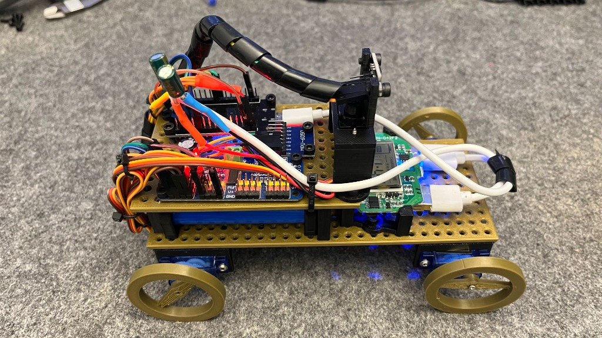
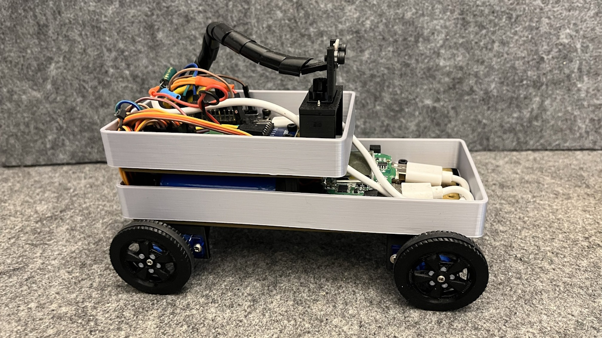
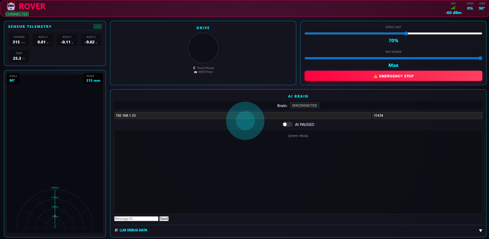
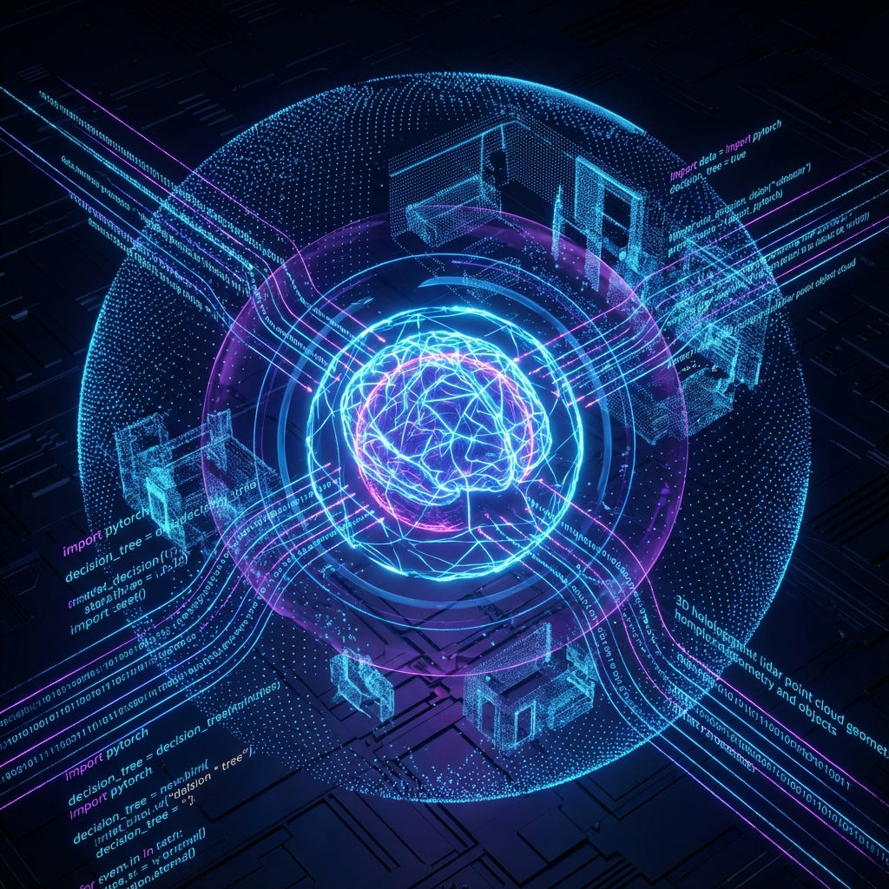

Under the Hood
The heart is an ESP32 microcontroller handling the motors and sensors. It relies on the MPU6050 IMU—the go-to sensor for drones, balancing robots, and motion tracking. It drives servos via the PCA9685. The brain lives on your computer, talking via WiFi using WebSockets.
ESP32 Core
Real-time hardware control
Lidar Vision
VL53L0X laser scanning
Python Brain
Local AI processing
WebSockets
Low-latency bridge
MPU6050
6-Axis Motion Tracking
PCA9685
16-Channel Servo Driver
Dual Control Modes
Switch instantly between manual pilot and autonomous AI exploration.

Manual Control
A joy to drive. We built a custom Web UI hosted directly on the ESP32. The joystick control is instant—less than 50ms latency. This mode works instantly because the ESP32 handles the joystick commands directly, bypassing the Python brain round-trip.

AI Autonomous Mode
Flip the switch... and the AI takes over. It scans the room with Lidar, sends data to Python, and asks a local LLM (like Llama 3 or Qwen) what to do. It analyzes room geometry and makes logical decisions to explore gaps.
Built to Last
Modular 3D Printed Chassis
Fully 3D printed with a custom base plate featuring an M3 screw grid. Super easy to mount the ESP32, battery holder, and future sensors.
Plug-and-Play Software
Just clone the repo, install dependencies, and run python start_robodog.py.
It automatically checks your system and connects.
Documentation
Quick Start
Get up and running in 5 minutes. One-time setup and daily operation guide.
Production Release
Complete production guide, system architecture, and troubleshooting.
Setup Guide
Detailed hardware assembly, wiring diagrams, and configuration.
Full Documentation
Comprehensive project documentation, API details, and development guide.
Docs Index
Directory of all available documentation and resources.
Final Summary
Summary of the latest session, features implemented, and status.
Ready to Build Your Own?
The entire project is open source. Wiring guides, 3D print files, and all the code are available for free.